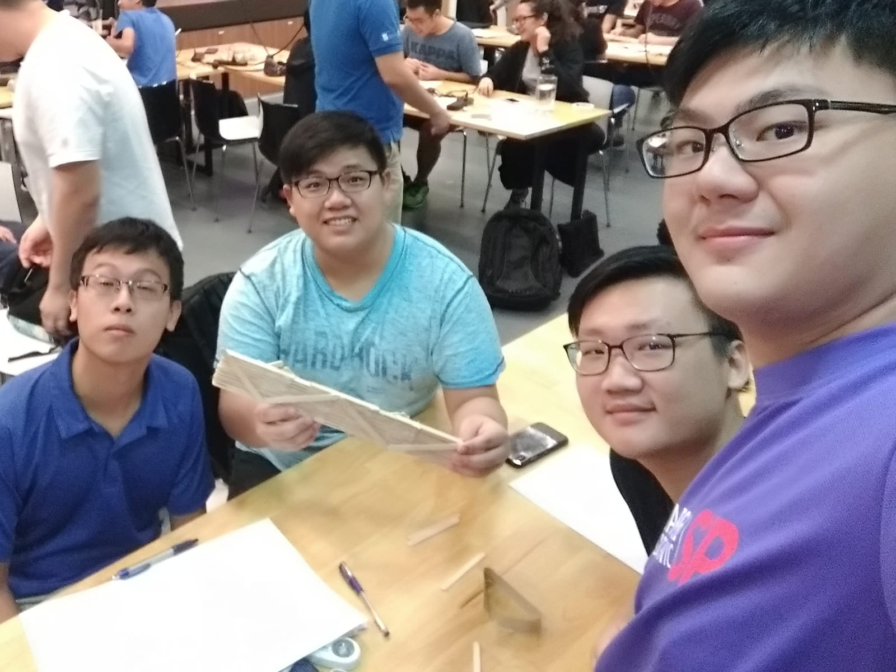

Blog
Journey of our project:
Day 1
|  | We were handed a problem by our teachers to make an automatic way of sending paper messages to another person:O On the first day, nobody really knew each other. There was also confusion over what was going on. After things settled down, the lecturers went on to introduce themselves and the EAP. We were then given an icebreaking activity, which was the first task of the program: build a bridge out of ice cream sticks that can span a 30cm gap and hold a load. Our team decided to rest the ice cream sticks on their horizontal edges and then glue them together. This design, surprisingly, allowed our team's bridge to hold the most weight out of all the bridges. With the bridge building activity done, the next activity was to make something that can carry a message across a room. We built a plane, a crude slingshot and a ninja star. The plane, unsurprisingly, turned out to be the best performing overall out of the 3 items. The lecturers then revealed we had to build a plane launcher, which was what we did over the remainder of the tryouts. Overall, after the initial awkwardness, we found that we were able to collaborate with each other rather well. This helped set a healthy precedent for the rest of the tryouts. |
Day 2
 |
On the first day, nobody really knew each other. There was also confusion over what was going on. After things settled down, the lecturers went on to introduce themselves and the EAP. We were then given an icebreaking activity, which was the first task of the program: Build a bridge out of ice cream sticks that can span a 30cm gap and hold a load. Our team decided to rest the ice cream sticks on their horizontal edges and then glue them together. This design, surprisingly, allowed our team's bridge to hold the most weight out of all the bridges. With the bridge building activity done, the next activity was to make something that can carry a message across a room. We built a plane, a crude slingshot and a ninja star. The plane, unsurprisingly, turned out to be the best performing overall out of the 3 items. The lecturers then revealed we had to build a plane launcher, which was what we did over the remainder of the tryouts. Overall, after the initial awkwardness, we found that we were able to collaborate with each other rather well. This helped set a healthy precedent for the rest of the tryouts. |
Day 3
|
On the third day, we finalised the design of our paper planes launcher in AutoCAD. We did minor tweaks in the design for our ease to construct the launcher. We added puzzle joins along the edges sized at 15mm by 3mm to have an edge to join multiple panels to together with ease.
Plywood, cardboard and acrylic was the three material that was provided during the construction. We chose acrylic over the other materials provided was mainly on the durability properties it had. Acrylic is more impact resistant with do stand the test of time. Building the launcher out of it would give our launcher great aesthetic with ease of fabrication. We proceed on to the laser cut our launcher in the fabrication lab. It was our first time using the laser cutting machine. With the help of a staff over at the fabrication lab, we learn some basic of the machine. For example, the files format we needed to convert our drawing into. This was to ensure the software the machine used was able read our drawing to ensure accurate dimensions. We also learnt that placing our drawing closer together before cutting can reduce on material wastage. The laser cutting of our acrylic pieces did not take long. We had 10 pieces cut out within 5 minutes, that’s quick! In the fabrication lab, we cut out the mounting bracket for our switches. To prop up our switches at an angle, we heated up the mounting bracket we cut at 45 degrees. To bend the acrylic, we first must heat up along the markings we have made on the acrylic on a heating machine. The heating machine have a wire heated up, placing the acrylic above the hot wire will soften the acrylic and allow us to bend it to our angle. We drilled two holes of 7.5mm to secure the switches on the mounting brackets. The mounting bracket was to be mounted on the base plate we had. The red switch on the right will be launching the paper plane forward. The black switch on the left will be swiveling our rotating launcher between the 180 degrees left and right. Our construction was not able to be completed in time and only launching the paper plane forward was functioning correctly. With a little more time for this project, we are confident that our paper plane launcher construction will be completed. This project has allowed our group to develop creative thinking, teamworking skills and the “never say die” attitude. It was no easy task to create a paper plane launcher within 3 days. Our team had put in pride and determination to complete the assigned task to the best of our ability. We believed the Engineering Academy Tryouts has allowed us to do what intrigues engineering students. We will be looking for more to take part in the Engineering Academy. |